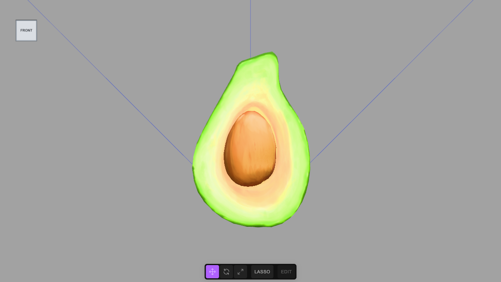
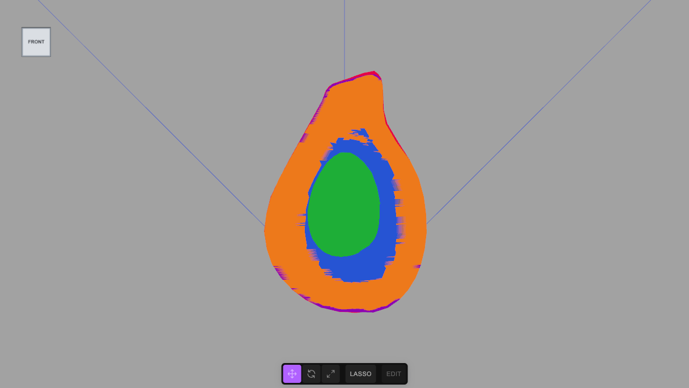
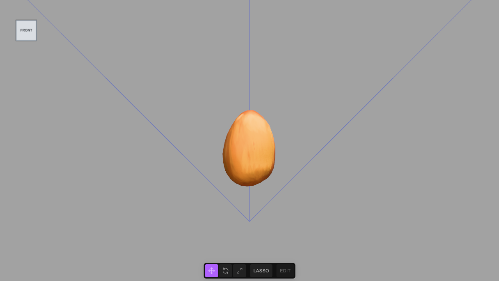
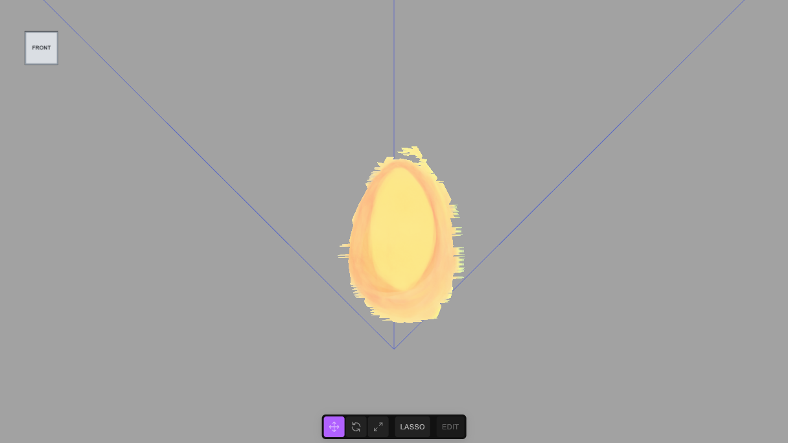
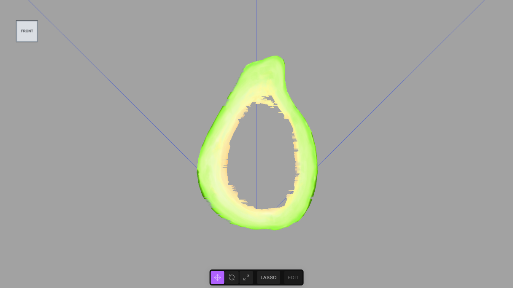
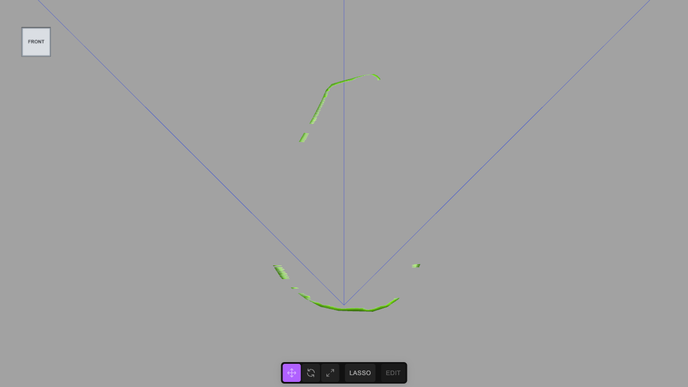
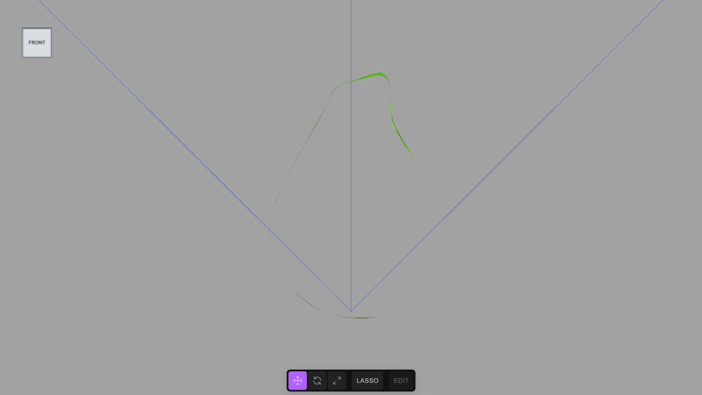
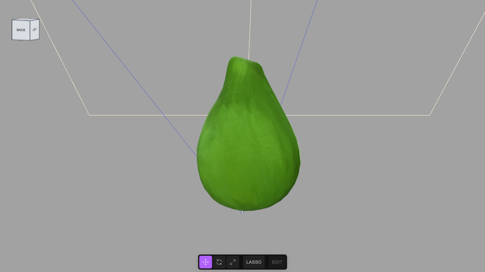

Cut an avocado into named parts, building the tool by hand
CUT here, ships in the editor as SEG (SEG.describe, SEG.split, SEG.preview, SEG.restore), with more checks: it refuses meshes it cannot cut safely (skinned, several materials, morph targets), reads the texture's own transform, welds on position and UV, and cuts in one undo step. To cut a model of your own, use the general tutorial, Cut any textured mesh into named parts, which uses SEG, and has this avocado as its quick example and a toy duck as its hard one. This page is kept because writing the tool once shows exactly what it does. It uses the name CUT so that it does not clash with the built-in SEG.Models usually arrive as one mesh with one material, so nothing in the scene says "this is the seed". This tutorial imports an avocado half, looks for the evidence the file does carry (which pieces of the texture are separate patches, and what colours are painted on them), cuts the mesh into five separate meshes named skin, pit, pit cavity, flesh and skin edge, and checks the cut. Afterwards $S('#Avocado_Pit') or $S('.flesh-cut') reaches exactly those parts. Built with the JS Shell.
1 The idea, and how far it goes
A mesh has no idea what its triangles are. Two things in the file do carry hints. UV islands: an artist unwraps a model into patches of one texture image, and the patches that touch no other patch (they share no vertices, once the exporter has split vertices along the seams) are often whole parts. Painted colour: inside one patch, a ring of orange and a ring of cream are different things even though the triangles are the same size. The method is to look at both, decide what each piece is, then cut by that decision. It is not automatic recognition: the names come from you (or from an AI that is shown the description), and the tool never loses a triangle or invents one that is not on the surface.
When it works: one indexed mesh, with UVs and a base-colour texture, whose parts are laid out as separate islands or are painted in clearly different colours. The avocado is the good case. When it does not: a mesh with no UVs, or with only vertex colours or a flat colour (there is no evidence to read); a part that shares an island and a colour with its neighbour (a boundary no one painted cannot be found); and a model whose islands are not parts. The same description, run on a second textured sample model (a toy duck with one yellow body), gave ten islands of which most were pieces of the same yellow body, so island to part would have produced ten meaningless names. A person merges them, which the plan allows (island takes a list; the general tutorial does exactly that), and this is the real limit: the method makes a decision cheap to check, it does not make the decision.
The 3D advantage. The seed, the flesh and the skin are one fruit; the parts are only separable because the object is three-dimensional data, and you can isolate each one, look at it from behind, and see where the cut really is. A flat picture of the fruit would give you only the colours.
2 Import the model
The model is the Avocado sample from the Khronos glTF sample models (Avocado.glb), made by Microsoft and released under CC0 1.0 (public domain dedication); retrieved 27 October 2026, 8.3 MB, one mesh of 682 triangles and three 2048 × 2048 textures. Download it, then use File → Import (or drop it in the viewport). Accept the import dialog's defaults. The scene now has one object, Avocado, with one material.
3 The tool: CUT
One block defines CUT, six small functions on globalThis so that the following blocks (the Shell keeps no variables between pastes) can use them. CUT.islands finds the connected pieces of a mesh. CUT.describe prints each piece's size, where it sits in the texture, how big it is in space and its main colours (a small, deterministic k-means over colours sampled across each triangle). CUT.split cuts by a plan. CUT.preview gives every part its own flat colour so you can see the cut, and CUT.restore puts the textured material back.
Two details matter. A flat patch is made of a few large triangles, far larger than the rings painted on it, so a part that is divided by colour is first subdivided (each triangle into 4n, the same surface and texture, only more triangles) and then each small triangle goes to the palette colour nearest the texture at its centre. And the cut refuses to run if a piece of the mesh has no destination or is used twice: every triangle lands in exactly one part. The new meshes share the original material, so the model looks exactly as before, and the original mesh, with the empty wrapper nodes the importer left around it, is replaced in one undoable step.
// CUT: cut one textured mesh into named, addressable parts.
// Meshes arrive as a single object with a single material, so nothing in them says "this is the pit". Two things in the file do, though:
// 1. the UV islands: connected pieces of surface that the texture artist laid out as separate patches of the texture
// (an exporter splits vertices along a UV seam, so a piece is a set of triangles joined by shared vertices);
// 2. the colours painted on the texture: inside one island, a ring of orange and a ring of cream are different things.
// CUT.describe() lists both, so you can look and decide what each one is. CUT.split() then cuts by your decisions, and never loses a triangle.
const CUT = globalThis.CUT = {};
// the colour of the texture at a point (u, v), read from a copy of the image drawn once
CUT.reader = map => {
const img = map.image, w = img.width, h = img.height;
const cv = document.createElement('canvas'); cv.width = w; cv.height = h;
const cx = cv.getContext('2d', { willReadFrequently: true }); cx.drawImage(img, 0, 0);
const px = cx.getImageData(0, 0, w, h).data;
return (u, v) => {
u -= Math.floor(u); v -= Math.floor(v);
const x = Math.min(w - 1, Math.floor(u * w)), y = Math.min(h - 1, Math.floor((map.flipY ? 1 - v : v) * h)), p = (y * w + x) * 4;
return [px[p], px[p + 1], px[p + 2]];
};
};
// the triangles of each island, largest first
CUT.islands = geometry => {
const idx = geometry.index.array, n = idx.length / 3;
const par = Int32Array.from({ length: geometry.attributes.position.count }, (_, i) => i);
const find = a => { while (par[a] !== a) { par[a] = par[par[a]]; a = par[a]; } return a; };
for (let t = 0; t < n; t++) { const r = find(idx[t * 3]); par[find(idx[t * 3 + 1])] = r; par[find(idx[t * 3 + 2])] = r; }
const by = new Map();
for (let t = 0; t < n; t++) { const r = find(idx[t * 3]); if (!by.has(r)) by.set(r, []); by.get(r).push(t); }
return [...by.values()].sort((a, b) => b.length - a.length);
};
// colours sampled across a triangle's face on a small grid of barycentric points, so that even a few large triangles give many samples
const samples = (uv, idx, t, read, k = 5) => {
const a = idx[t * 3], b = idx[t * 3 + 1], c = idx[t * 3 + 2], out = [];
for (let i = 0; i <= k; i++) for (let j = 0; i + j <= k; j++) {
const x = i / k, y = j / k, z = 1 - x - y;
out.push(read(uv.getX(a) * x + uv.getX(b) * y + uv.getX(c) * z, uv.getY(a) * x + uv.getY(b) * y + uv.getY(c) * z));
}
return out;
};
// k-means on colours, started from the colour farthest from those already chosen, so the same input always gives the same answer
const kmeans = (cols, k) => {
const d2 = (p, q) => (p[0] - q[0]) ** 2 + (p[1] - q[1]) ** 2 + (p[2] - q[2]) ** 2;
const c = [cols[0]];
while (c.length < k) c.push(cols.reduce((best, p) => (Math.min(...c.map(q => d2(p, q))) > Math.min(...c.map(q => d2(best, q))) ? p : best), cols[0]));
let groups = [];
for (let it = 0; it < 12; it++) {
groups = c.map(() => []);
cols.forEach(p => groups[c.reduce((bi, q, i) => (d2(p, q) < d2(p, c[bi]) ? i : bi), 0)].push(p));
groups.forEach((g, i) => { if (g.length) c[i] = [0, 1, 2].map(a => g.reduce((s, p) => s + p[a], 0) / g.length); });
}
return c.map((m, i) => ({ rgb: m.map(Math.round), share: +(groups[i].length / cols.length).toFixed(2) })).sort((a, b) => b.share - a.share);
};
// what is in a mesh: each island's size, where it sits in the texture and in space, and its main colours
CUT.describe = (node, k = 3) => {
const g = node.geometry, idx = g.index.array, uv = g.attributes.uv, pos = g.attributes.position;
const read = CUT.reader(node.material.map);
return CUT.islands(g).map((ts, i) => {
const cols = ts.flatMap(t => samples(uv, idx, t, read)), lo = [9, 9, 9], hi = [-9, -9, -9], u = [9, -9], v = [9, -9];
ts.forEach(t => { for (let q = 0; q < 3; q++) {
const a = idx[t * 3 + q]; u[0] = Math.min(u[0], uv.getX(a)); u[1] = Math.max(u[1], uv.getX(a)); v[0] = Math.min(v[0], uv.getY(a)); v[1] = Math.max(v[1], uv.getY(a));
for (let c = 0; c < 3; c++) { const p = [pos.getX(a), pos.getY(a), pos.getZ(a)][c]; lo[c] = Math.min(lo[c], p); hi[c] = Math.max(hi[c], p); }
} });
return `island ${i}: ${ts.length} triangles, texture u ${u.map(x => x.toFixed(2))} v ${v.map(x => x.toFixed(2))}, size ${hi.map((x, c) => (x - lo[c]).toFixed(3))}, colours ${kmeans(cols, k).map(c => `rgb(${c.rgb}) ${Math.round(c.share * 100)}%`).join(' ')}`;
}).join('\n');
};
// cut by a plan:
// { group, classes, parts: [ { name, island, classes }, a whole island (or a list of them) becomes one mesh
// { island, subdivide, palette: [ { name, color: [r, g, b], classes } ] } ] } an island is divided by colour; entries
// with the same name make one part
// A palette part is first subdivided (each triangle becomes 4^subdivide smaller ones, same surface, same texture) because the triangles of a flat
// patch are far bigger than the rings painted on it; then each small triangle goes to the palette colour nearest the texture colour at its centre.
CUT.split = (node, plan) => {
const g = node.geometry, idx = g.index.array, A = g.attributes, names = Object.keys(A);
const islands = CUT.islands(g), read = CUT.reader(node.material.map);
const used = new Set();
const vertex = i => names.flatMap(n => Array.from({ length: A[n].itemSize }, (_, c) => A[n].array[i * A[n].itemSize + c]));
const tri = t => [0, 1, 2].map(k => vertex(idx[t * 3 + k]));
const mid = (a, b) => a.map((x, k) => (x + b[k]) / 2);
const subdivide = (t, n) => { if (!n) return [t]; const [a, b, c] = t, ab = mid(a, b), bc = mid(b, c), ca = mid(c, a); return [[a, ab, ca], [ab, b, bc], [ca, bc, c], [ab, bc, ca]].flatMap(s => subdivide(s, n - 1)); };
const UV = names.slice(0, names.indexOf('uv')).reduce((s, n) => s + A[n].itemSize, 0);
const colour = t => read((t[0][UV] + t[1][UV] + t[2][UV]) / 3, (t[0][UV + 1] + t[1][UV + 1] + t[2][UV + 1]) / 3);
const d2 = (p, q) => (p[0] - q[0]) ** 2 + (p[1] - q[1]) ** 2 + (p[2] - q[2]) ** 2;
const made = []; // [name, classes, triangles]
for (const part of plan.parts) {
const ids = [].concat(part.island);
ids.forEach(i => { if (!islands[i]) throw new Error('there is no island ' + i); if (used.has(i)) throw new Error('island ' + i + ' is used twice'); used.add(i); });
const ts = ids.flatMap(i => islands[i]).map(tri);
if (!part.palette) { made.push([part.name, part.classes, ts]); continue; }
const bins = new Map(); // several palette colours may share one name (a part with a gradient in it)
part.palette.forEach(p => { if (!bins.has(p.name)) bins.set(p.name, { classes: p.classes, tris: [] }); });
ts.flatMap(t => subdivide(t, part.subdivide || 0)).forEach(t => { const c = colour(t); bins.get(part.palette.reduce((best, p) => (d2(c, p.color) < d2(c, best.color) ? p : best), part.palette[0]).name).tris.push(t); });
bins.forEach((bin, name) => { if (bin.tris.length) made.push([name, bin.classes, bin.tris]); });
}
if (used.size !== islands.length) throw new Error('every island must go to a part: ' + (islands.length - used.size) + ' left over');
const group = new Group();
group.name = plan.group; group.userData.customClasses = plan.classes;
node.updateWorldMatrix(true, false); node.matrixWorld.decompose(group.position, group.quaternion, group.scale); // the new group sits where the mesh was in the world
for (const [name, classes, tris] of made) {
const geo = new THREE.BufferGeometry(), n = tris.length * 3; let at = 0;
names.forEach(an => {
const a = A[an], arr = new a.array.constructor(n * a.itemSize);
tris.forEach((t, i) => t.forEach((v, k) => { for (let c = 0; c < a.itemSize; c++) arr[(i * 3 + k) * a.itemSize + c] = v[at + c]; }));
at += a.itemSize; geo.setAttribute(an, new THREE.BufferAttribute(arr, a.itemSize, a.normalized));
});
geo.setIndex([...Array(n).keys()]); geo.computeBoundingBox(); geo.computeBoundingSphere();
const m = new Mesh(geo, node.material); // the same material, so the object looks exactly as it did
m.name = name; m.castShadow = node.castShadow; m.receiveShadow = node.receiveShadow; m.userData.customClasses = classes;
group.add(m);
}
// the mesh goes, and so do the empty wrappers the importer left around it (a file name, a root node), so nothing nameless is left behind
let gone = node;
while (gone.parent && gone.parent !== editor.scene && gone.parent.children.length === 1) gone = gone.parent;
editor.execute(new RemoveObjectCommand(editor, gone));
editor.execute(new AddObjectCommand(editor, group));
return made.map(([n, , t]) => n + ': ' + t.length + ' triangles').join(' | ');
};
// check a cut: give every part of a group its own flat colour (one undoable command each), then CUT.restore() puts the textured material back
const PREVIEW = ['#e6194b', '#3cb44b', '#4363d8', '#f58231', '#911eb4', '#46f0f0', '#f032e6', '#bcf60c', '#008080', '#9a6324'];
CUT.preview = group => {
CUT.saved = CUT.saved || new Map();
group.children.forEach((m, i) => {
if (!CUT.saved.has(m)) CUT.saved.set(m, m.material);
editor.execute(new SetMaterialCommand(editor, m, new MeshBasicMaterial({ color: PREVIEW[i % PREVIEW.length] })));
});
return group.children.map((m, i) => PREVIEW[i % PREVIEW.length] + ' ' + m.name).join('\n');
};
CUT.restore = () => { CUT.saved.forEach((material, m) => editor.execute(new SetMaterialCommand(editor, m, material))); CUT.saved.clear(); return 'textured materials restored'; };
'CUT ready: ' + Object.keys(CUT).join(', ')4 Look before you cut
Ask for the description of the mesh, with four colours per island:
// look before cutting: every island of the mesh, with its size and its main colours
const mesh = $S('#Avocado').nodes[0];
CUT.describe(mesh, 4)island 0: 483 triangles, texture u 0.01,0.67 v 0.01,0.76, size 0.043,0.063,0.022, colours rgb(51,99,7) 51% rgb(70,118,26) 28% rgb(93,148,44) 20% rgb(97,172,4) 1%
island 1: 158 triangles, texture u 0.70,0.97 v 0.00,0.33, size 0.019,0.027,0.006, colours rgb(126,62,19) 36% rgb(187,127,56) 32% rgb(159,90,34) 23% rgb(210,159,88) 9%
island 2: 41 triangles, texture u 0.54,0.98 v 0.35,1.00, size 0.042,0.061,0.000, colours rgb(52,107,2) 39% rgb(203,227,119) 29% rgb(247,212,86) 18% rgb(113,185,21) 14%Read it like evidence. Island 0 is the biggest (483 triangles), 0.043 × 0.063 × 0.022 in size, and dark green throughout: the skin. Island 1 is a small patch, 0.019 × 0.027 × 0.006, all brown: the pit. Island 2 has 41 triangles and a thickness of 0.000, so it is flat; its colours are dark green, cream, yellow and lime: the cut face, which is painted with a dark rim, a cream and lime flesh and a yellow hollow. Looking at the texture image itself agrees: a green sphere-like patch, a brown egg, and a half fruit.
Units are the model's own: the fruit is about 0.06 tall, so the sizes are in metres (6 cm). The unit is a property of the file, not of this tutorial.
5 Cut by what you decided
Islands 0 and 1 become whole parts. Island 2, the cut face, is divided by colour: yellow and orange to the cavity the seed sat in, cream and lime to the flesh, dark green to the edge where the peel meets the cut. Several palette colours can share one name, because the cavity has a gradient. Each part gets a name and classes: skin and peel, pit and seed, and so on, with flesh-cut on the three parts that are the cut face, so one class selects them together.
// cut the avocado. Island 0 is the big shell (the outside), island 1 the small egg-shaped patch (the seed), island 2 the flat half-fruit patch (the cut face).
// The cut face is divided by colour into the hollow around the seed (yellow and orange), the flesh (cream and lime) and the dark edge where the peel meets it.
const mesh = $S('#Avocado').nodes[0];
CUT.split(mesh, {
group: 'Avocado_Fruit', classes: ['fruit', 'avocado'],
parts: [
{ island: 0, name: 'Avocado_Skin', classes: ['skin', 'peel'] },
{ island: 1, name: 'Avocado_Pit', classes: ['pit', 'seed'] },
{ island: 2, subdivide: 4, palette: [
{ name: 'Avocado_Pit_Cavity', classes: ['cavity', 'flesh-cut'], color: [247, 212, 86] },
{ name: 'Avocado_Pit_Cavity', classes: ['cavity', 'flesh-cut'], color: [245, 175, 70] },
{ name: 'Avocado_Flesh', classes: ['flesh', 'edible', 'flesh-cut'], color: [203, 227, 119] },
{ name: 'Avocado_Flesh', classes: ['flesh', 'edible', 'flesh-cut'], color: [113, 185, 21] },
{ name: 'Avocado_Skin_Edge', classes: ['skin', 'peel-edge', 'flesh-cut'], color: [52, 107, 2] }
] }
]
})Avocado_Skin: 483 triangles | Avocado_Pit: 158 triangles | Avocado_Pit_Cavity: 2286 triangles | Avocado_Flesh: 6195 triangles | Avocado_Skin_Edge: 2015 trianglesThe cut face went from 41 triangles to 10,496 (41 × 44), and the whole fruit from 682 to 11,137: that is the price of a boundary that follows the paint. A smaller subdivision is cheaper and the boundary is more ragged.
6 Check the cut
A cut is only as good as the decision behind it, so look at it. CUT.preview paints each part a different flat colour (one undoable command per part); isolate hides everything but one selector.
CUT.preview($S('#Avocado_Fruit').nodes[0]) // each part its own flat colour
isolate('#Avocado_Pit') // only the pit
showAll()
CUT.restore() // the textured material, back







7 Lights, and the gate
A directional light and a soft fill, named and classed like everything else, and then requireLabels(true). That marks the scene: from now on a commit is refused while any object is unnamed, duplicated or without a class, and lint() lists what is wrong. This is the second reason to name the parts well: the importer's own wrapper nodes had no class, and the block would not run until they were gone, which is why CUT.split removes them with the mesh.
// a light to see it by, and the names and classes that make every object reachable
const sun = new THREE.DirectionalLight(0xfff1dd, 2.6); sun.name = 'KeyLight'; sun.position.set(0.4, 0.8, 0.9); sun.userData.customClasses = ['light'];
const sky = new THREE.HemisphereLight(0xdde6ff, 0x6a78c8, 1.4); sky.name = 'FillLight'; sky.userData.customClasses = ['light'];
editor.execute(new AddObjectCommand(editor, sun));
editor.execute(new AddObjectCommand(editor, sky));
requireLabels(true) // from here on a commit is refused while any object is unnamed, duplicated or classless8 A view to open with
The camera, straight on, with the fruit filling the middle of the frame. The scene is at a scale of centimetres, so the camera is about 11 cm away.
// the view the scene opens with: the cut face, straight on, the fruit filling the middle of the frame
const FRONT = [0, 0.032, 0.115], AIM = [0, 0.031, 0];
editor.camera.position.set(...FRONT);
editor.controls.center.set(...AIM);
editor.camera.lookAt(...AIM);
editor.signals.cameraChanged.dispatch(editor.camera);
'camera at ' + FRONT9 Use the parts
The point of the exercise is what you can now say:
$S('#Avocado_Pit') // the seed, one mesh
$S('.flesh-cut') // the three parts that make the cut face
$S('.skin') // the outer skin and its thin edge on the cut face
$S('.edible') // just the fleshAnything that works on a selector now works on a part: recolour the flesh, hide the skin, animate the pit away, or let an AI edit "make the seed bigger" and have it resolve to a mesh instead of a guess.
tejaswigowda/test1, with the three textures stored beside it. The player at the top is pinned to a commit (@554a8ee), which never goes stale; the link in this note reads the branch head.requireLabels. The 641 triangles of the skin and the pit were carried over unchanged and the cut face's 41 became 41 × 256 = 10,496, so the five parts add up to 641 + 10,496 = 11,137 (CUT.split refuses to run when a piece of the mesh has no destination). The screenshots are frames of that scene, with the editor's controls hidden. The limits stated in step 1 were tested on a second textured sample model, a toy duck, which is the subject of the general tutorial; nothing from it is part of this scene. The committed scene was later rebuilt with the editor's own SEG, which writes the descriptors, the plan and the source into the scene on top of what is built here (see the general tutorial); the parts and their triangle counts are the same. Nothing here was run through a video render. The boundary between cavity, flesh and edge follows the colours in the texture, not an anatomical measurement, so it is as ragged as the paint.Credits and licences
People
- Tejaswi Gowda (script, scene)
Assets
- Avocado.glb: Microsoft (Khronos glTF Sample Models: Avocado) Licence: CC0 1.0 Universal.
Tools
None used.